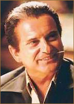

Фильм "Один дома"
Сюжет фильма:
«Один дома» – знаменитая семейная рождественская комедия от режиссера Криса Коламбуса о приключениях восьмилетнего Кевина, которого родители забыли дома в Рождество. Семейство Маккалистер, отправившееся на рождественские каникулы в Париж, в суматохе отъезда забывает дома младшего сына - восьмилетнего Кевина (Маколи Калкин), который наслаждается внезапно обретенной свободой и возможностью делать все, что взбредет в голову. Однако, когда в жилище проникают двое воров (Джо Пеши и Дэниел Стерн), парнишка применяет всю свою находчивость и изобретательность, чтобы они не смогли поживиться легкой добычей... Фильм «Один дома» является рекордсменом по кассовым сборам в жанре комедии. В главной роли снялся Маколей Калкин.
Актеры:
Джон Хёрд - Питер Маккалистер (отец Кевина) Джим Ортлиб
Джим Ортлиб
Робертс Блоссом - Марлей
Кэтрин О'Хара - Кейт Маккалистер (мать Кевина)
 Джо Пеши - Гарри Лайм (вор)
Маколей Калкин - Кевин Маккалистер (главная роль)
Анджела Геталс - Линни
 Джим Ортлиб
Джим Ортлиб
 Дэниэл Стерн - Марвин Мерчантс — главная роль (вор)
Дэниэл Стерн - Марвин Мерчантс — главная роль (вор)
Девин Рэтрей - Базз